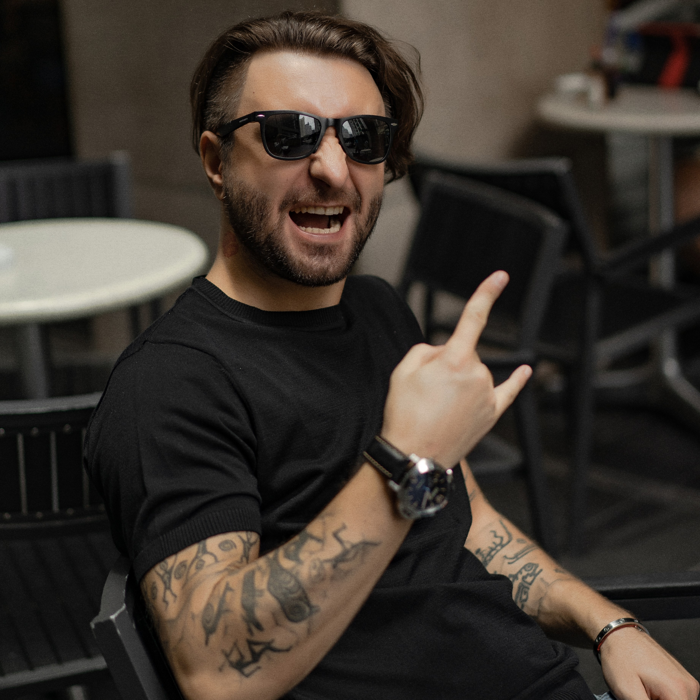
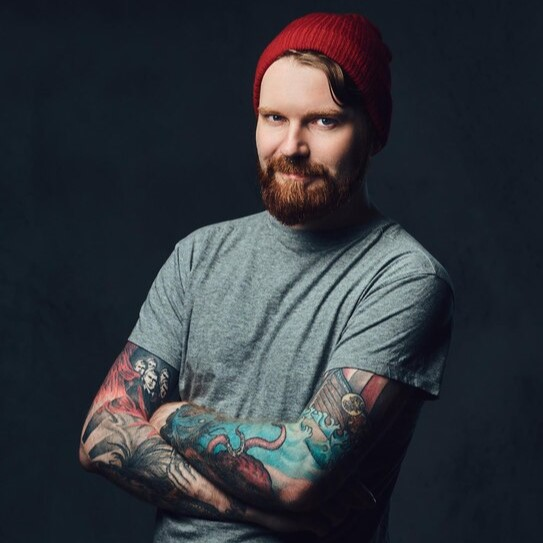
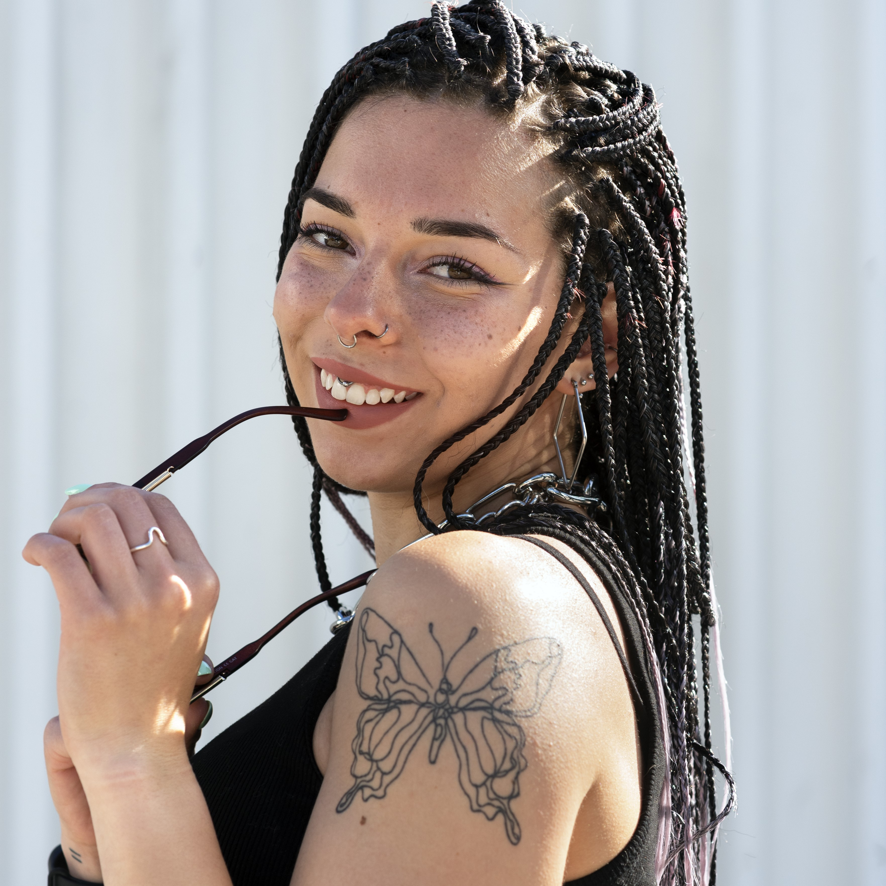

Roger 'Tatu'

"Comecei isso tudo pois não via sentido em deixar que minha arte só chegasse a quem está perto de mim. Quero que marque todos os que se identificarem com ela. Que outros tatuadores se arrisquem em fazê-las e que as artes sejam cada vez mais ilimitadas. Minhas artes preferidas de fazer são as com traços bem marcados, com cores fortes e vibrantes, daquelas que chamam atenção de loonge, tipo nosso mascote tatuzinho."
AndreY

"Vim de Fortaleza pra cá e me encontrei criando e tatuando. Entrei no estúdio do Tatu em 2021 e após um tempo tivemos a ideia de criar o site para compartilhar nossas artes online e ter uma comunidade maior de tatuzeiros. Adoro tatuagens que brincam com as cores, que tem complexas misturas de cores para trazer vida a arte."
Lari P.Ink

"Sou amiga de infância do Roger e desde sempre gostamos muito de assistir desenhos e desenhar, isso foi o que nos aproximou. Nos reencontramos depois de alguns anos em um evento de tatuadores e fui convidada para fazer parte do time do estúdio também. Minhas tatuagens favoritas são as mais cartoonescas, além das de anime e mangá."